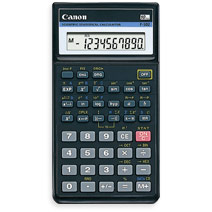
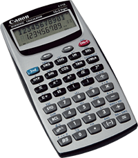
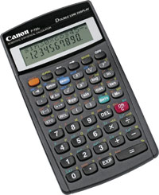

WebCal 計數機網頁
CANON F-502、F-710及F-720i 簡介
|  |  |  |
| F-502 | F-710 | F-720i |
Canon F-502為香港中學會考及高級程度會考的准用計數機之一，與Casio fx-50F相同的是使用代數邏輯輸入方法(A.L.)，所以操作的方式與fx-50F相當相似， 與fx-50F比較，這部計算機的功能相對較為精簡，只有136個計算功能，除了不能編寫程式外，亦沒有好像50F的內置程式庫(例如: 餘弦定律)，統計功能方面沒有線性回歸，基數功能方面沒有邏輯計算功能，不過較特別的是這部計數機有複數計算功能，可以計算複數的加、減、乘及除。根據佳能香港網頁的資料，F-502已在2005年停產，所以已沒有新F-502計算機出售了。
Canon F-710i計算機使用雙行顯示屏，上行顯示輸入的算式，下行顯示計算結果。F-710內置功能不算太多，只有139個計算功能及三個獨立數值記憶(M1、M2及M3)沒有線性回歸、基數計算功能，不過較特別的是有內置38個程式，與舊款CASIO fx-50F內置程式相比，除了內置程式數目更多外，似乎更實用、更適合中學使用，其中19個程式與數學有關，11個程式用作計算面積及體積(例如: 三角形面積及扇形面積)，其它的是平方數和、立方數和、等差數列、等比數列、兩點間距離、餘弦定律及正弦定律。另外19個程式則與物理學有關，亦有適合中學使用(例如: 均加速度直線運動)。其實F-710頗為適合香港會考使用，不過與CASIO fx-50F PLUS相似，相信是因內置程式可以同時顯示計算所用的公式，因此F-710不會獲香港考評局接納為准用計算機， 實在有點可惜， 而這部計算機在香港有售的時間亦相當短，根據佳能香港網頁的資料，F-710已在2005年停產。
F-720i計算機亦使用雙行顯示屏，上行顯示輸入的算式，下行顯示計算結果。操作方法採用高級算式順序輸入法(A.D.A.L.)，即是將算式依書寫的順序輸入計算機。F-720i的計算功能其實不算吸引，除一般科學函數計算機的功能外，統計功能方面 亦有普通統及線性回歸，基數功能亦可以進行邏輯計算，不過這部計算機沒有程式功能，亦沒有微積分功、矩陣、向量等等功能。 較特別的是這個計算機有27個記憶，其中一個為獨立記憶，不過由於可以顯示26個字母記憶，所以F-720i不會獲香港考評局接納為准用計算機，可能是這個原故，佳能公司現時沒有在香港出售這部計算機。